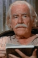

Country:United States, 108 minutes
Spoken languages:
Genres:Adventure, Western, History
Director(s):Sydney Pollack
Writer(s):John Milius, Vardis Fisher, Edward Anhalt
Video Codec:Unknown
Number: 1029


Certification:PG
Storyline:
A mountain man who wishes to live the life of a hermit becomes the unwilling object of a long vendetta by Indians when he proves to be the match of their warriors in one-to-one combat on the early frontier.
Cast: 

Medium: Original DVD,
Loaned: No
Aspect ratio: Unknown